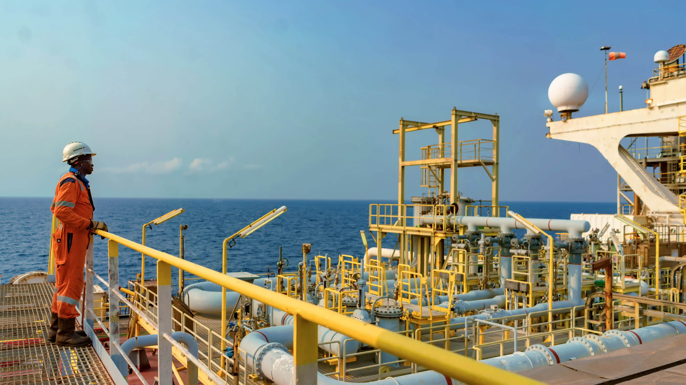
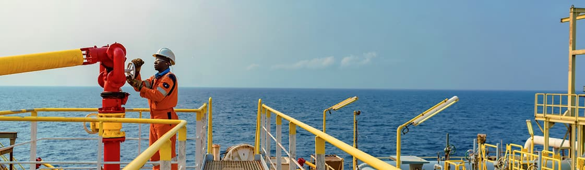
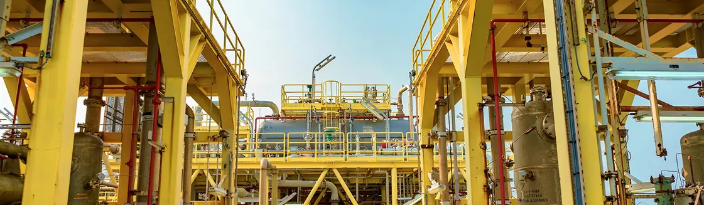
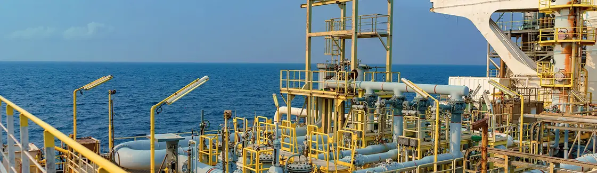
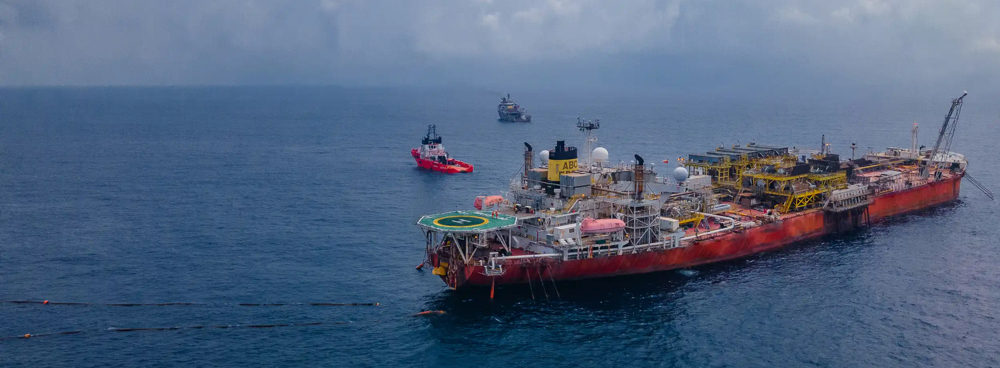

OUR SERVICES
STAC Marine provides comprehensive services for FPSO and FSO units.

Our team is committed to delivering top-tier services
We design, build, and manage these industry-leading production facilities for the offshore oil and gas sector, contributing to a more stable and affordable global energy supply.
01.
Dominating Offshore Production: FPSOs and FSOs
02.
Adaptable and Enduring
03.
FPSOs: Processing Powerhouses
04.
Streamlined Offloading
PROCESS BREAKDOWN
How we use FPSO to extract energy resources
step 1
Energy Extraction
Imagine a giant straw reaching down to the seabed (subsea wells). Through this straw, a mix of things come up: oil, gas, and water (hydrocarbons). This mixture is like unrefined oil you might see before it's processed.

step 2
Processing Plant
Once onboard the FPSO, this mixture goes to a separation plant. Think of it like a high-tech recycling center for oil, gas, and water. Oil: The usable oil gets stored in giant tanks on the FPSO (crude oil).

Gas
The natural gas can either be:
Piped back to land for further processing.
Put back into the reservoir to help push more oil out (like adding water to a ketchup bottle).
Water
The saltwater that comes up with the oil is treated and either:
Used for various things onboard the FPSO.
Pumped back into the reservoir (depending on regulations).
step 3
Storage Tank
The separated oil is like the finished product waiting for delivery. It's stored in giant tanks onboard the FPSO until it's ready to be shipped.

step 4
Delivery
When it's time to ship the oil, special tanker ships called "shuttle tankers" come alongside the FPSO.
The oil gets pumped from the FPSO's storage tanks onto the shuttle tankers, which take it to refineries or markets. An FPSO acts like a processing center and storage unit at sea, all in one massive vessel!
The oil gets pumped from the FPSO's storage tanks onto the shuttle tankers, which take it to refineries or markets. An FPSO acts like a processing center and storage unit at sea, all in one massive vessel!

Partner with us to leverage our FPSO services for your sustainable energy goals.